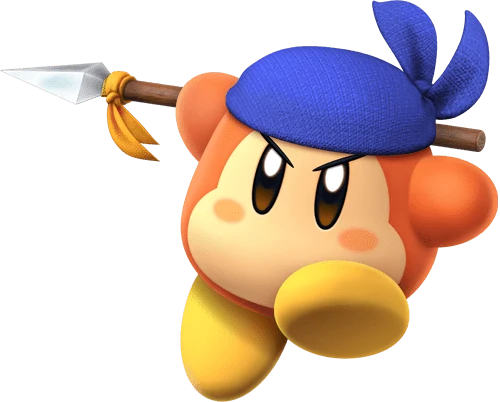
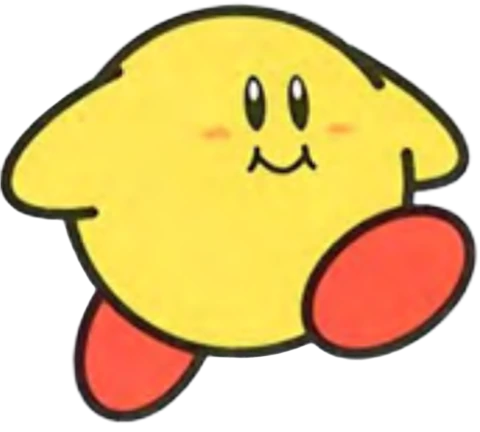

Personajes de kirby!
Kirby el personaje principal de la saga!
Meta Knight es un guerrero estelar!
El famoso bufón de Kirby Super Star
Waddle Dees son los habitantes más comunes
jefe que debutó en Kirby Star Allies
Enemigo que representa la copia de Kirby
¡El rival de Kirby por excelencia! Rey dede
Galacta Knight es un jefe final de kirby!

Waddle Dee pañuelo es un enemigo de Kirby

Keeby es igual a Kirby pero de color amarillo.